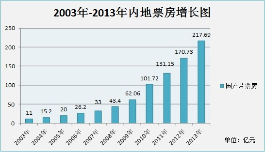
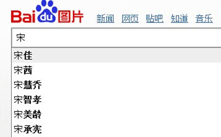
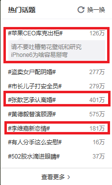
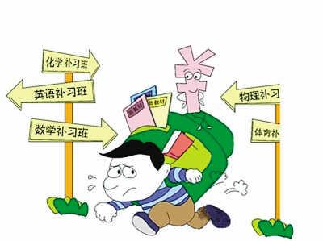
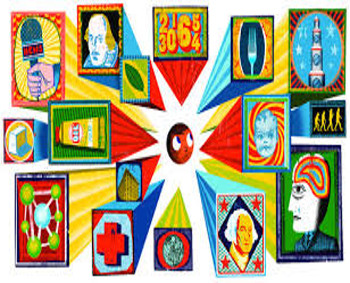
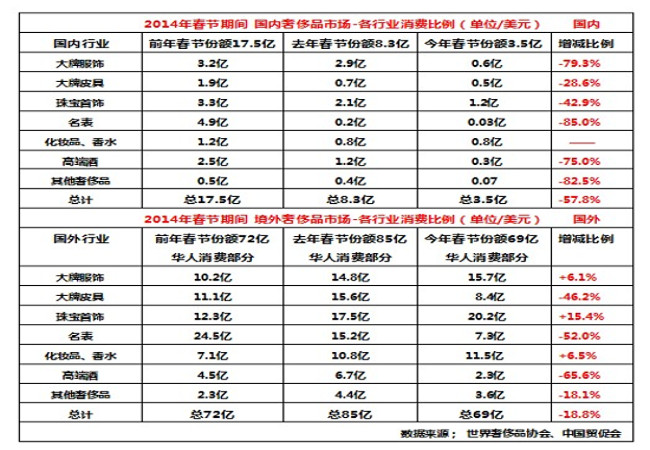

当前我国道德水平分析
王亚楠 |
1140329059 |
李惠柯 |
11403290XX |
刘彦君 |
11403290XX |
牛明 |
11403290XX |
王官皓 |
1140329057 |
改革开放后经济水平的进步，带来了普通民众生活水平的提高， 人们有时间和经历去享受更加丰富多彩的文化生活， 从而滋生了庞大的文化产业市场.
2003-2013中国电影票房增长

华人明星收入榜

80后，90后逐渐成为参与社会生活的主题人群，是改革开放后的从小 伴随各类偶像长成的一代，对文体明星怀有不同程度的崇拜心理，于 是自身容易受到明星们道德水平的影响.
大众媒体的刻意为之和推波助澜

移动互联网时代信息传播方式的多样化，以及微博微信等工具的盛行，给很多 负面道德事件的传播的传播提供了更加丰富多元的方式。

相比过去比较单一的报纸等平面 媒体，互联网时代更多的掺杂个人 主观态度的自媒体更受到快节奏的 年轻人的青睐，从而单一个体的道 德观念更容易形成整体的导向
明星等公众人物自身的道德素养
综合分析以上原因，我们应该明白由于当前社会的发展 社会分工的细化，在一些行业缺乏有效的规章制度以及法律的 监管，在一些领域才会出现产生不良影响的道德事件。
但我们每个人需要时刻注意自身的道德素养，多关注身边的正面 典型，相信这个社会存在更多的还是：
从教育方面分析当前的道德现状
教育体制

中国目前的教育体制是以高考为代表的应试教育。 围绕考试的教育便使“智育”与“德育”出现失衡。 现行的教育体制使得学生从小学开始便 面临小升初的压力，同样的高中面临高考 压力，在这种压力下，学生更多的便是把 时间投入到了自然科学知识的学习而忽视 了个人品德的塑造。
教育模式
当代道德教育是没有道德意义，枯燥 无味的说教与灌输，只有理论很少实践。 这种“德育”过程等同于“智育”过程， 就是将知识形成概念、记忆、反复练习的 过程。
教育目的
学生接受教育的目的不是为了获得知识， 而是获得更好教育机会和就业机会。这种教育 已然失去了其本质，变得越来越功利化。 功利化的思想渗透到个人品德里面， 直接出现的结果便是受教育者思想的不 端正，以追求利益为主要目标，做出丧 失道德事情。
社会教育

学生接受教育的目的不是为了获得知识， 而是获得更好教育机会和就业机会。这种教育 已然失去了其本质，变得越来越功利化。 功利化的思想渗透到个人品德里面， 直接出现的结果便是受教育者思想的不 端正，以追求利益为主要目标，做出丧 失道德事情。
西方价值观的扭曲
西方文化的强势涌入——西方的思想观念、生活方式深刻地影响着人们，尤其是青年人
个人主义
现象：明星嫖娼
特点：个人至上、金钱至上
实用主义

现象：科研投入,培训补课
特点：效用至上的价值取向，以主观效用排斥真理客观性
消费主义

现象：明星吸毒,奢侈品消费
特点：消费至上、享乐至上
功利主义、拜金主义